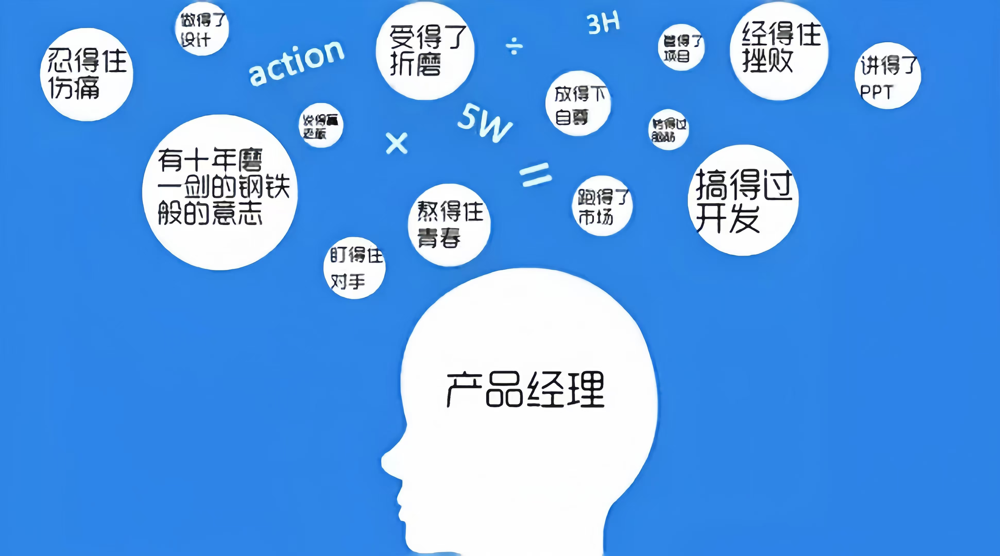

本文部分摘取自本实验室产品前辈们的分享
产品经理简介
产品经理绝对不像经常刷到的，今天做个会员功能，帮助公司实现商业化，明天做个APP，拉新多少用户
初级产品经理，在公司内地位并不高。实现的需求，大多来自运营、老板、领导。很少去推动全公司去完成自己制定的战略目标
一个公司的产品分工是很细的，比如下图是我梳理的公司产品架构，每个模块都是1到多个产品负责。对于初级产品，耕耘好自己负责产品线的已经能够使自己的工作时长饱和，去推动别的产品线协调完成自己的项目，更是需要时间
- 主要职责
用户需求挖掘与分析，产品规划与设计，项目管理，产品运营与优化等。
- 所需能力
产品规划与设计能力，项目管理能力，用户洞察与分析能力，技术理解能力，创新能力，沟通协调能力，分析决策能力
- 综上所述，产品经理是一个综合性的角色，需要具备多方面的能力和素质，以确保产品的成功开发和上市。
